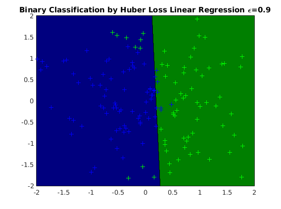
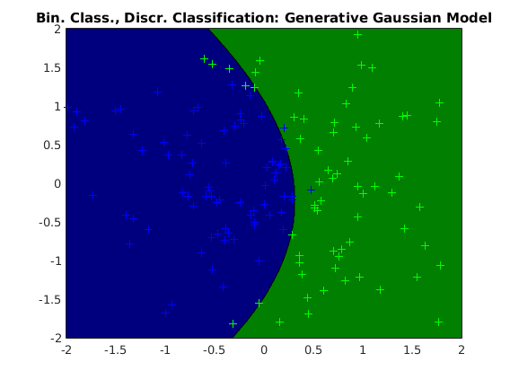

Contents
Description of demo_binaryclass_alt.m
Uses regression or multiclass submodels to do binary classification task
clear all close all generateData_curved
usage of regression binary classification
options_rg = []; options_rg.subModel = @ml_regression_Huber; options_rg.subOptions = []; options_rg.epsilon = 0.3; model_rg = ml_binaryclass_regression(Xtrain, ytrain, options_rg); yhat_rg = model_rg.predict(model_rg, Xtest); testError_rg = mean(yhat_rg ~= ytest); fprintf('Averaged misclassification test error with %s is: %.3f\n', ... model_rg.name, testError_rg); figure; plot2DClassifier(Xtrain, ytrain, model_rg);
Averaged misclassification test error with Binary Classification by Huber Loss Linear Regression \epsilon=0.9 is: 0.080
usage of classification binary classification
options_cl = []; options_cl.subModel = @ml_multiclass_GDA; model_cl = ml_binaryclass_multiclass(Xtrain, ytrain, options_cl); yhat_cl = model_cl.predict(model_cl, Xtest); testError_cl = mean(yhat_cl ~= ytest); fprintf('Averaged misclassification test error with %s is: %.3f\n', ... model_cl.name, testError_cl); figure; plot2DClassifier(Xtrain, ytrain, model_cl);
Averaged misclassification test error with Bin. Class., Discr. Classification: Generative Gaussian Model is: 0.049